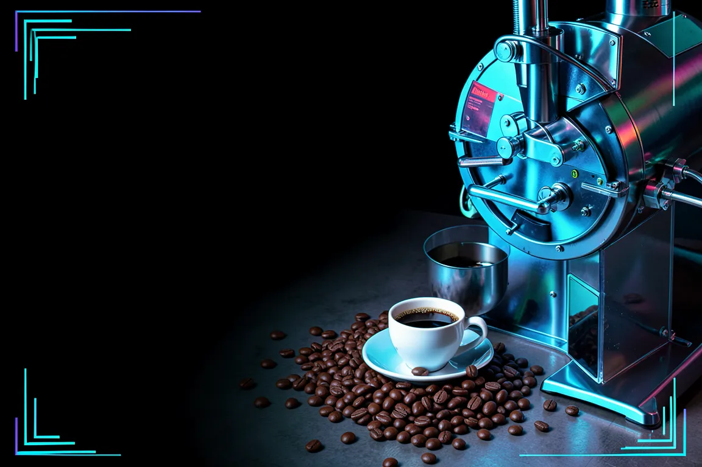

веб · 2020–now · также: Киберкор, Кибер-Y2K, Веб в стиле техвира
Чёрный фон, кислотно-зелёные или циановые акценты, хром, угловатые срезы, рамки HUD, подписи данных капителью и глитч. Смешивает киберфантастику 1990-х с техвиром и ощущается как интерфейс машины.

Главная идея
Страница — интерфейс машины: острая, подписанная, холодная и плотная от данных.
Принципы дизайна
Берите фон #05070A и один кислотный акцент (#C6FF00 или #00F0FF) не больше чем на 10% поверхности.
Срезайте углы под 45° через clip-path 8–16px на карточках и кнопках; в остальном ставьте радиус 0px.
Обрамляйте панели линией 1px цвета акцента при 40% и добавляйте 4 угловых засечки по 8–12px.
Набирайте подписи данных 10–12px прописными с трекингом от +0,12em до +0,2em моноширинным или широким display-шрифтом.
Добавляйте глитч при наведении: смещайте слои текста на 2–4px в циан и маджента на 120–200мс.
Накладывайте линии развёртки 2px при 6–10% непрозрачности и зерно 3–5%.
Добавляйте на каждый экран 3 и больше элементов HUD: код, координату, номер версии или таймер.